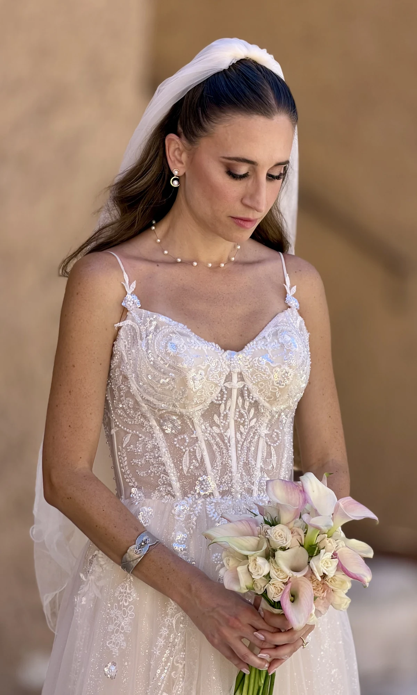
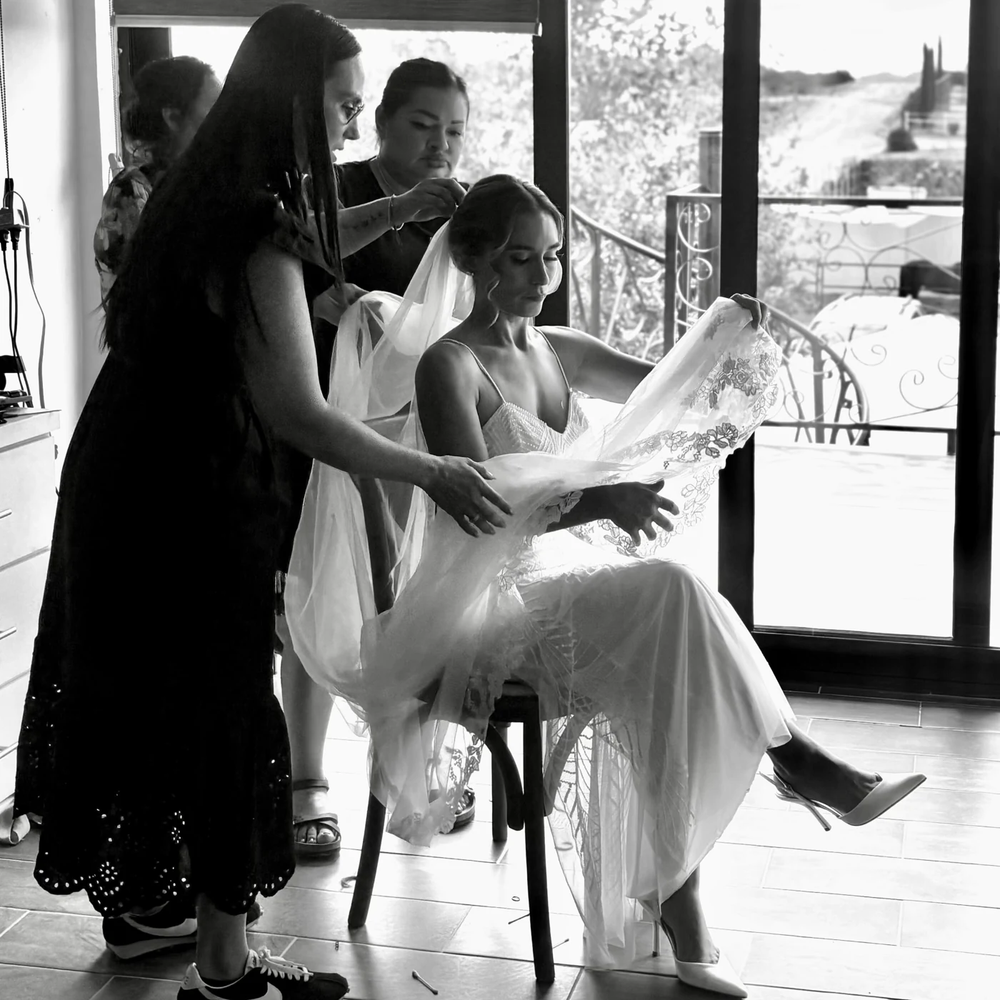
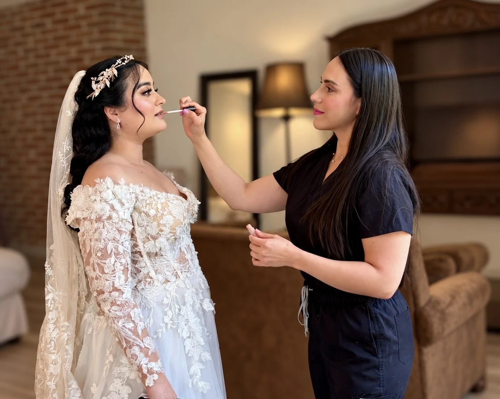
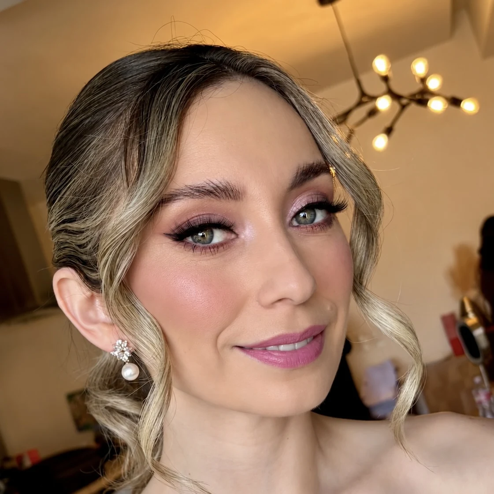

Makeup and hair trial
We plan your look together and refine the details. Your trial can be scheduled to coincide with pre-wedding photos, depending on availability.
Your wedding look should feel like you—only more unforgettable.
A thoughtful beauty experience from your makeup and hair trial to the wedding day itself, with skin preparation and personalized finishing details.
USD amounts are approximate, converted at 1 USD = 18.667 MXN (IMF, October 23, 2026). Bookings are priced in MXN; your payment provider’s exchange rate and fees may differ.
 GABY PADILLA / MAKEUP ARTIST
GABY PADILLA / MAKEUP ARTISTMakeup that complements your style and celebrates what makes you unique. A closer look at our brides and their getting-ready moments.
Select a photo to explore the gallery.




Showing 6 of 11 bridal photos





Every detail is designed to help you feel confident, ready and completely yourself.
We plan your look together and refine the details. Your trial can be scheduled to coincide with pre-wedding photos, depending on availability.
Includes Hydrafacial + microdermabrasion, scheduled according to your skin’s needs.
A prep appointment approximately one week before the wedding, coordinated around your skin and schedule.
Professional makeup and the hairstyle we designed together. Airbrush makeup is available at no additional charge, and clip-in extensions can be installed if you provide your own.
A complete experience including your trial, skin preparation, and event-day makeup and hairstyling.
USD amounts are approximate, converted at 1 USD = 18.667 MXN (IMF, October 23, 2026). Bookings are priced in MXN; your payment provider’s exchange rate and fees may differ.
Reserve your date with approx. $107.14 USD
Remaining balance: approx. $535.71 USD
The remaining balance can be paid in two installments, as agreed when booking.Appointment duration listed on AgendaPro: 180 min. Included package sessions are coordinated separately.Check availability & book Payment dates and conditions are confirmed when booking.A simple plan so you can enjoy each moment.
Secure your booking with a approx. $107.14 USD deposit.
Meet for a makeup and hair trial, which may be coordinated with pre-wedding photos.
Schedule your facial and brow/facial-hair prep ahead of the celebration.
Relax while we bring your chosen hair and makeup look to life.
Gaby’s private studio is located in Playas de Tijuana and welcomes brides from throughout Tijuana, including San Diego visitors. Ask about wedding-day service at locations in Tecate and Valle de Guadalupe and the surrounding area.
Travel to San Diego for weddings and special events is available on request, subject to availability. Additional fees may apply. Contact us before booking to confirm timing, travel arrangements and a quote.
Have another question? You can reach out before booking.
Message me on WhatsAppAbsolutely! I welcome clients visiting Tijuana from San Diego. I can also travel to San Diego for weddings and special events on request, subject to availability. Additional fees may apply. Please message me on WhatsApp before booking to confirm your location, timing and travel quote.
Yes. Gaby offers on-location makeup and hairstyling for weddings, quinceañeras and special events in Tecate and Valle de Guadalupe. Contact us before booking to confirm availability, timing, travel and any additional charges.
Makeup and hair trial, Hydrafacial + microdermabrasion facial, facial hair removal and eyebrow shaping, and wedding-day makeup and hairstyling.
Yes. The trial can be planned around your pre-wedding photos, depending on scheduling availability.
Yes. You can choose airbrush makeup as part of the bridal package at no extra cost.
If you already own clip-in extensions, installation is included. Hair extensions themselves are not included.
The total is approx. $642.85 USD. Reserve with approx. $107.14 USD and pay the remaining approx. $535.71 USD in two installments. Confirm payment due dates when booking.
On-location services in Tecate and Valle de Guadalupe and other Tijuana areas may be available. Travel, timing and any additional charges are confirmed separately.
Bookings are managed through AgendaPro. Contact us before reserving to confirm travel, specific timing or customized arrangements.
Check availability & book